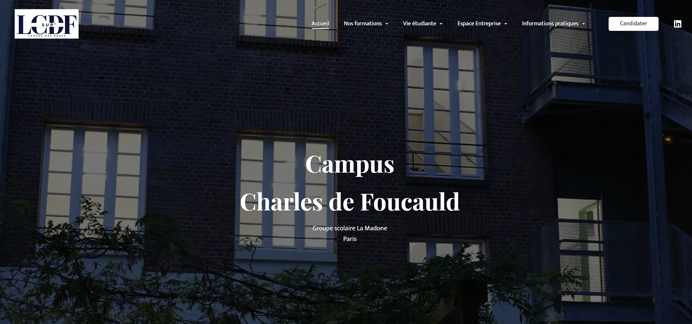
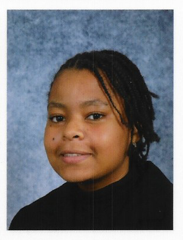

Biographie
GABIN Floralyn, 21 ans
Je suis actuellement étudiante en Licence 3 Informatique générale au Campus Charles de Foucauld et diplômée d'un BTS SIO (Services Informatiques aux Organisations) du Lycée Auguste Blanqui à Saint-Ouen
Ce portfolio a été conçu pour mettre en lumière les divers projets et études auxquels j'ai contribué tout au long de mon parcours.

Licence Informatique
Développement, Réseau et Cybersécurité